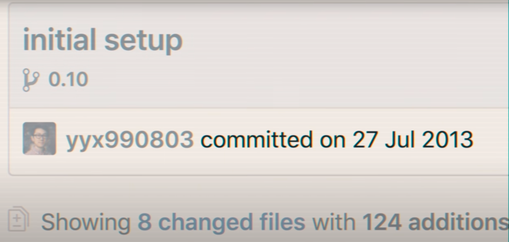
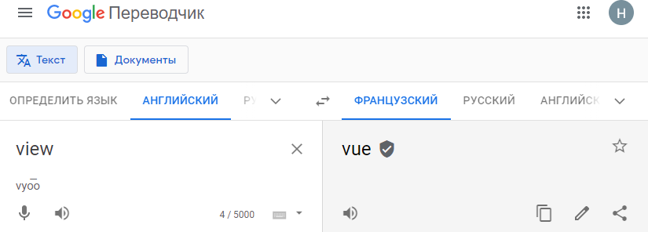
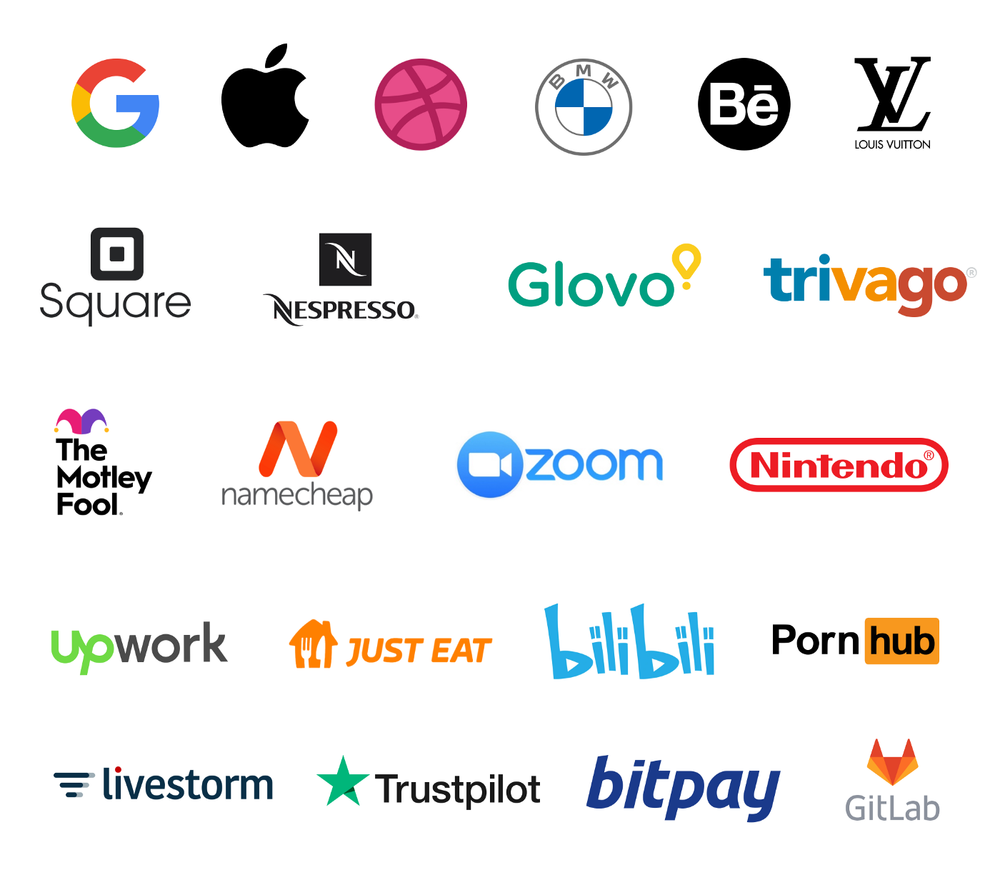
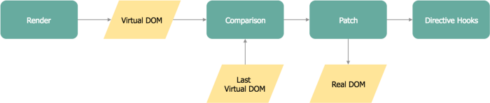

Vue js
The Progressive JavaScript Framework
W W W
WHO?
WHEN?
WHY?
WHO?

Evan You
WHEN?
The first source code commit to the project was dated July 2013, and
Vue was first released the following February, in 2014

WHY?
"I figured, what if I could just extract the part that I really
liked about Angular and build something really lightweight"
Evan You
WHY?
Seed.js ?

Result
🚀 Downloads: 7.4 millions/month
⭐️ GitHub Stars: 174K
👍 Large community, frequent conferences
💪 Serious competitor to React and Angular
They choose Vue

How does it attract developers?
🛫
Light Weight
production-ready build project
weighs
just 20KB after min+gzip
Virtual DOM performance and Rendering

Two-way data binding

Readability and single-file components

🧩 Reusable Components
🕵🏼 Great Unit-testing
🧾 Code Reading
🤸🏻♀️ Flexibility
🔌 Integration Capabilities
🛠 Tooling Ecosystem
Easy to get started 👌
Excellent documentation 📑
Video Courses 🎥
Great growing community ⚡️
New team talents 🦸♂️